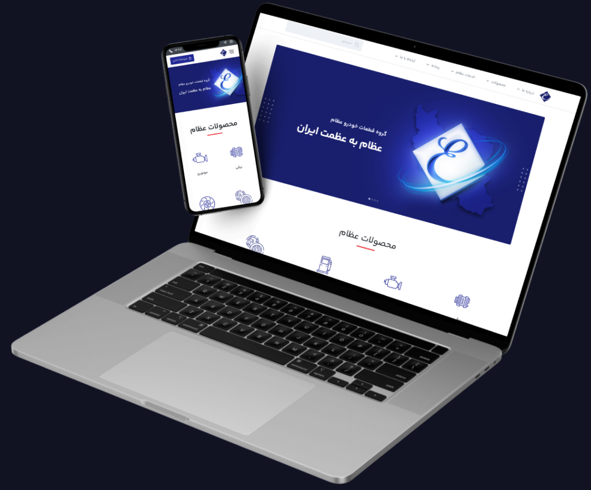
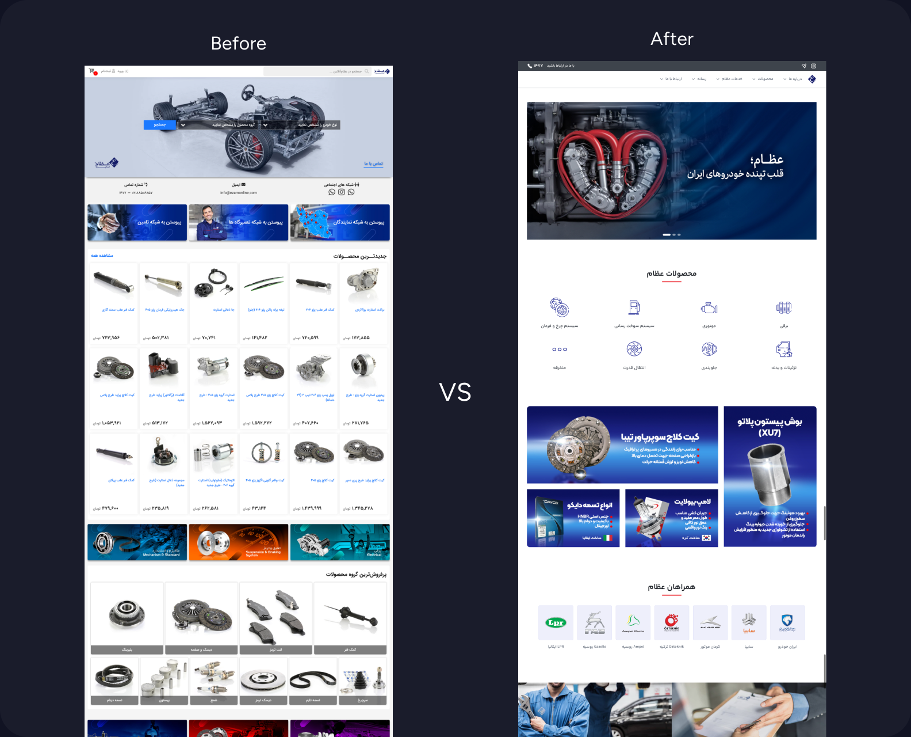
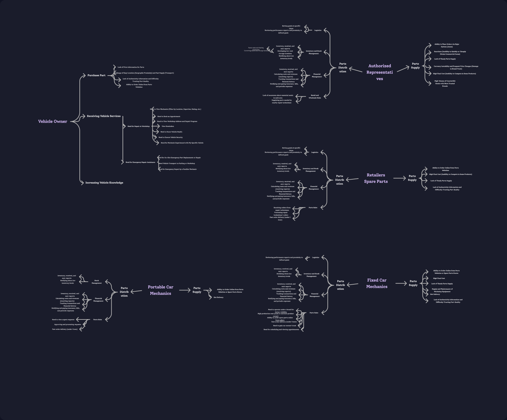
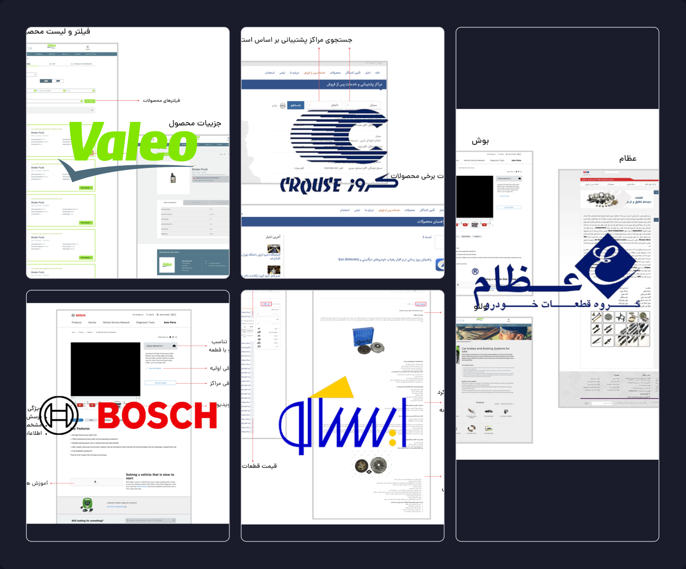
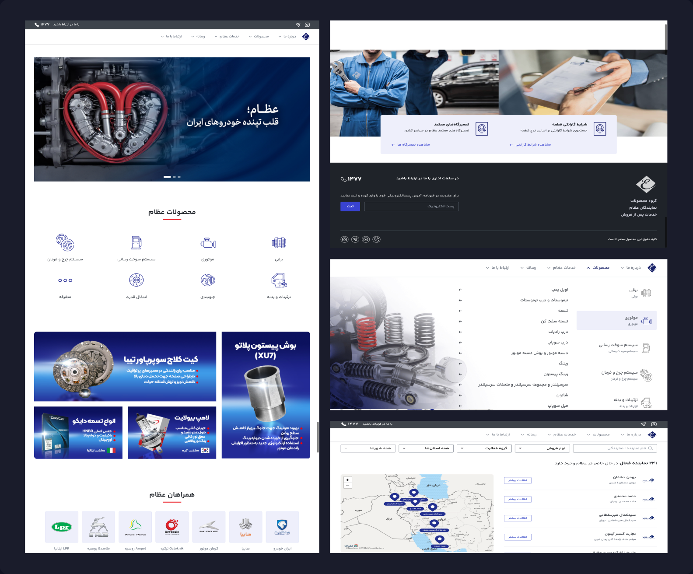

Ezam is one of Iran’s largest auto parts manufacturers and distributors. When I joined, their digital presence was the opposite of their market position — disconnected landing pages scattered across the web, no unified brand, no clear product catalogue, and no tools for the agents who sat at the centre of their distribution network.
The brief was to bring it all together. What that actually meant was designing three connected products from scratch: a consumer website, an agent dashboard, and a mobile app for repair shops — all under one shared design system, all working as a single ecosystem.
The hardest part wasn’t the website. It was the agent layer. Repair shops and customers both benefited from the new on-demand parts system, but agents bore the operational cost of holding and dispatching stock. So we designed an incentive into the dashboard itself — a parts exchange feature that let agents trade slow-moving inventory for high-demand items in their region. The system had to work for everyone, or it wouldn’t work at all.
I restructured the entire product catalogue from the ground up, designed a visual “Select Your Car” filter to help non-expert users find parts without knowing technical terminology, and delivered responsive layouts across desktop and mobile — repair shops and end users were almost entirely on mobile.
I left before development completed. But the design system, the strategy, and the full ecosystem were handed off ready to build.
Ezam is one of Iran’s largest auto parts manufacturers and distributors. The company sells in bulk to local storage hubs and branches, who then distribute parts to repair shops and end users across the country.
The business was strong, but the digital presence wasn’t matching it. News, blog content, product catalogues, media, and corporate information were scattered across disconnected landing pages with inconsistent branding and no shared structure. Customers couldn’t easily find products. Agents had no centralised tools. Repair shops had no way to interact with the network at all.
The holding company funded a digital agency to fix this, and I was brought in as the sole designer to lead the redesign across three connected products: a unified consumer website, an agent dashboard, and a repairman mobile app.

I worked as the only designer in a team of four — alongside the stakeholder, product manager, and product owner. My responsibilities covered the full design scope: strategy, content structure, design system, user flows, and final interfaces across web and mobile, in both consumer and professional contexts.
The platform was designed for RTL (right-to-left) Farsi, intended for launch in Iran. I’m a native Farsi speaker, which made the language layer straightforward.
The platform had to serve three very different user groups, and understanding what each one actually needed was the foundation of every design decision.
End consumers browse for parts when something breaks.
They want to find the right component for their specific car quickly, without needing to know technical part numbers or industry terminology.
Repair shops need parts on demand. Currently, when a customer brings in a broken car, the shop tells them what’s needed, and the customer has to source the part themselves. We wanted to flip that — letting the repairman request the part directly from the nearest agent, who delivers it to the shop quickly. Shops loved this idea immediately because it meant they could hold less inventory.
Agents distribute products regionally.
They were the most operationally complex group: they manage their own repositories manually, deal with regional demand mismatches (a part that sells well in one city might sit unused in another), and needed a reason to participate in the new fulfilment model.
The agent piece was critical.
Shops and customers both benefit from the new system, but agents bear the operational cost — they need to hold stock and dispatch parts on demand. So we designed the agent dashboard with a specific incentive: a parts exchange feature, letting agents trade slow-moving stock for items that sell better in their region.

I studied major international and domestic auto parts platforms — Bosch, Valeo, Crouse, and Iran Khodro — to understand both content structure and selling flows.
The most useful reference was Bosch. Their selling flow was the cleanest example of how to structure a parts catalogue around what the user actually knows (their car, their problem) rather than around how the manufacturer organises its inventory (part categories, SKUs). That insight directly shaped the “Select Your Car” filter, which I’ll come back to below.
The other competitors had cleaner unified websites than Ezam’s existing landing pages — confirming that the first move had to be consolidation. Before designing any new features, the scattered legacy pages needed to be brought under one branded roof.

Rather than treating this as a website redesign, we approached it as a connected ecosystem with three products that needed to work together:
1. The consumer website (ezampart.com) — unified product catalogue, brand content, agent locator, and direct purchasing.
2. The agent dashboard — a unified ERP for agents to manage inventory, fulfil repair shop requests, and exchange stock with other agents in different regions.
3. The repairman mobile app — letting repair shops request parts directly from the nearest agent on demand.
I designed a single design system covering all three products to maintain consistency across the ecosystem. Even though only the website launched during my time on the project, the design system was built to scale into the dashboard and app from day one.
The website launched at ezampart.com and is live today. The agent dashboard and repairman app were designed and ready, but development on those products started after I left the company. I don’t have visibility into whether they were eventually built.
This is something I want to be transparent about: I designed a complete ecosystem, but only one third of it became real during my involvement. The strategic work — the agent incentive model, the parts exchange, the on-demand fulfilment flow — exists as designs and documentation, not as a running product.

Unifying everything into a single platform was the right call. Before this project, Ezam’s digital presence was scattered across disconnected pages with no shared identity. Bringing it together — and designing the system to scale into agent and repairman tools — gave the business a foundation it didn’t have before. The website is still live three years later, which suggests the structure has held.
I’d push harder for prototype testing on the smaller flows — even informally. I designed the entire ecosystem based on stakeholder input, competitor research, and strategic logic, but I didn’t have the authority to run usability tests before launch. Looking back, I should have built quick prototypes of key flows (like the Select Your Car filter, or the agent exchange interface) and tested them with even a handful of representative users. The cost would have been minimal and the validation would have been valuable.
This is a lesson that has stayed with me: even when the project structure doesn’t formally include user testing, a designer can and should create informal opportunities to put the work in front of real people. Asking permission isn’t always the right move — sometimes you just need to do it.
This project taught me how to design across a connected ecosystem rather than for a single product. Holding three audiences (consumer, professional, B2B), three platforms (web, dashboard, mobile app), and one shared design system in mind simultaneously is a discipline I now apply to every multi-product brief. The work also reinforced that the most strategically important design decisions often live in the products users never see — the agent dashboard mattered more to the business model than the consumer website did, even though the website got all the visibility.